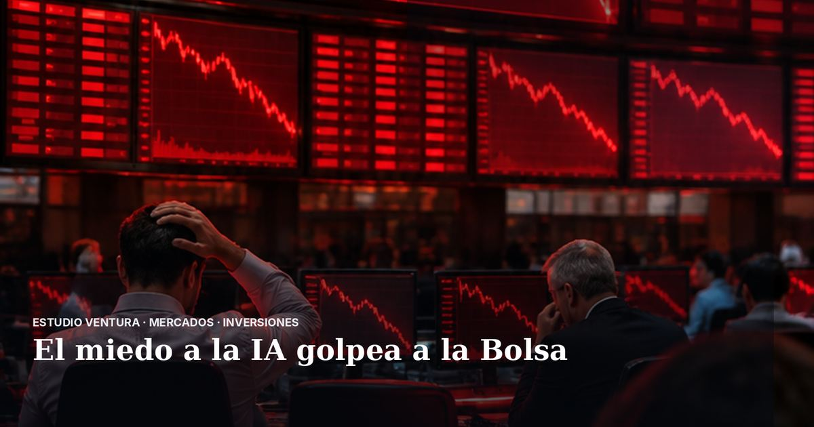

El miedo a una burbuja de IA en Wall Street golpea a la Bolsa de Lima

Según el diario Gestión (23-11-2026), la Bolsa de Valores de Lima cayó con fuerza por la tensión en Wall Street y la baja del precio del cobre. Medios como el Financial Times y Bloomberg explican la tensión por el temor a que las acciones vinculadas a la inteligencia artificial estén sobrevaloradas.
01Qué pasó
No pudimos confirmar en una fuente oficial el porcentaje ni el periodo exacto de la caída de la Bolsa, por lo que no los incluimos.
02Ángulo Perú
Para el Perú el tema es relevante porque, según Andina, la minería concentró el 76,1 % de las exportaciones entre enero y abril de 2026. Cuando el cobre baja, muchas acciones mineras también se mueven.
03Ángulo legal
Si inviertes en bolsa o en fondos con exposición minera, revisa tu diversificación antes de vender por pánico: una corrección global no siempre cambia los fundamentos de una empresa peruana. Esta nota no es una recomendación de inversión.
Fuentes: Diario Gestión (23-11-2026), Financial Times y Bloomberg (titulares), Andina. Información referencial; no constituye asesoría financiera.